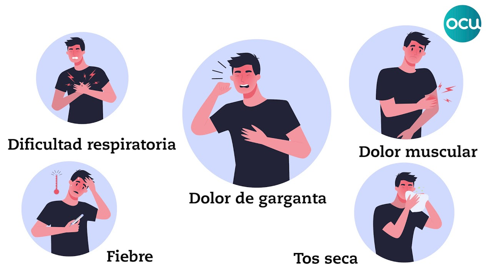

SARS COV-2

Qué es COVID-19
La enfermedad por coronavirus (COVID‑19) es una enfermedad infecciosa provocada por el virus SARS-CoV-2. La mayoría de las personas que padecen COVID‑19 sufren síntomas de intensidad leve a moderada y se recuperan sin necesidad de tratamientos especiales. Sin embargo, algunas personas desarrollan casos graves y necesitan atención médica.
El virus puede propagarse desde la boca o la nariz de una persona infectada en forma de pequeñas partículas líquidas que expulsa cuando tose, estornuda, habla, canta o respira. Estas partículas pueden ser desde pequeños aerosoles hasta gotitas respiratorias más grandes.
Todas las personas que presenten síntomas deben hacerse la prueba, en la medida de lo posible. Las personas que sean asintomáticas pero que hayan estado en contacto estrecho con alguien que esté o pueda estar infectado también pueden considerar la posibilidad de hacerse la prueba.
